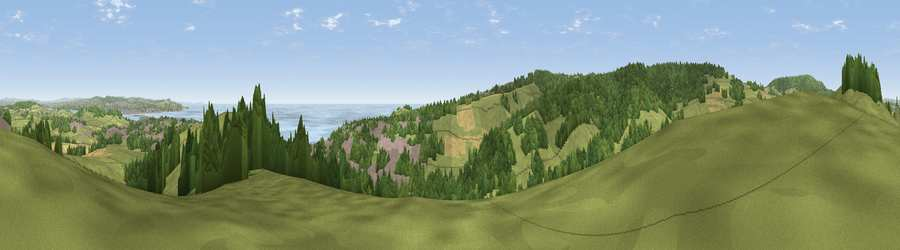

Viewpoint near Dawlish
#4769 in England · top 10% of its area beats it · near DawlishWhere it is
The exact computed spot (SX 95112 77275). Click the marker for map links.
The view, rendered

A 360° render of this exact spot computed from the terrain model, tree cover and land cover — summer colours, afternoon light, calibrated against photographs of famous viewpoints. Real trees, hedges and buildings will differ in detail.
The panorama
Grey silhouette: terrain skyline in each direction (720 bearings, Earth curvature and refraction included). Dashed green: skyline with trees (+15 m) and buildings (+8 m) as obstacles. Blue strip: how far the ground is visible on each bearing.
Where the view opens
Wedge length = distance to the farthest visible ground on that bearing (vegetation-aware). Rings at 10, 25 and 50 km.
What fills the view
46% grassland · 33% woodland · 9% water · 7% built-up · 5% cropland
Angular shares of the visible panorama (visual magnitude), not map area. Landscape diversity 0.56 (0–1 Shannon).
Key numbers
More beautiful places nearby
The staircase of upgrades: each row has a higher view potential than everything closer. Driving times are estimates from straight-line distance, calibrated against real road routing — check an actual route before setting out.
| Place | Direction | Drive | Score |
|---|---|---|---|
| Viewpoint near Dawlish | E · 1 km | ~2 min | 75.0 |
| Viewpoint near Luton | WNW · 2 km | ~6 min | 81.0 |
| Viewpoint near Holcombe | SW · 3 km | ~7 min | 83.3 |
| Viewpoint near Shaldon | SSW · 7 km | ~14 min | 83.8 |
| Viewpoint near Stokeinteignhead | SSW · 8 km | ~16 min | 84.1 |
| High Peak | ENE · 17 km | ~30 min | 85.3 |
| Golden Cap | ENE · 48 km | ~69 min | 88.7 |
| The Knoll | E · 59 km | ~81 min | 91.0 |
50.58576, -3.48297 · source: screening · position refined by local search. Computed location — check access rights before visiting.